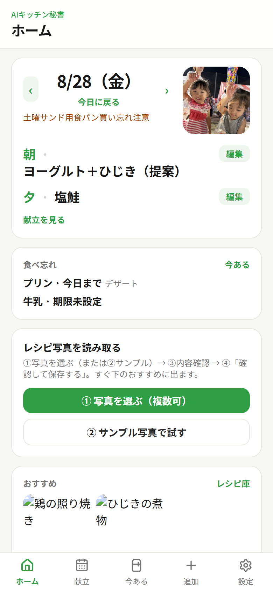
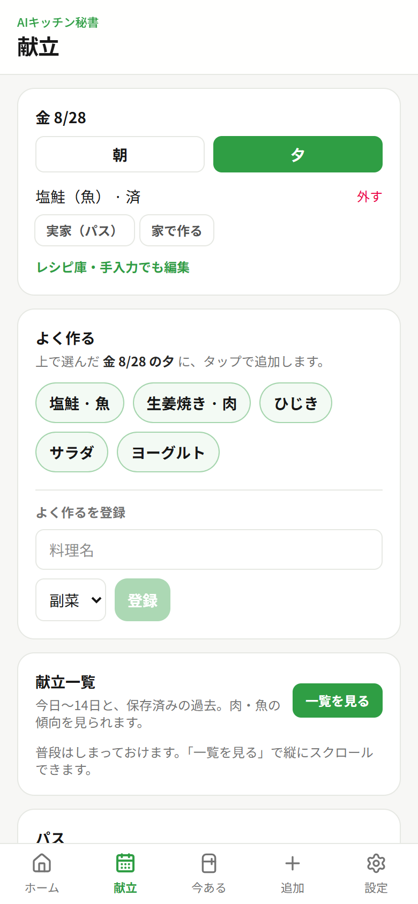
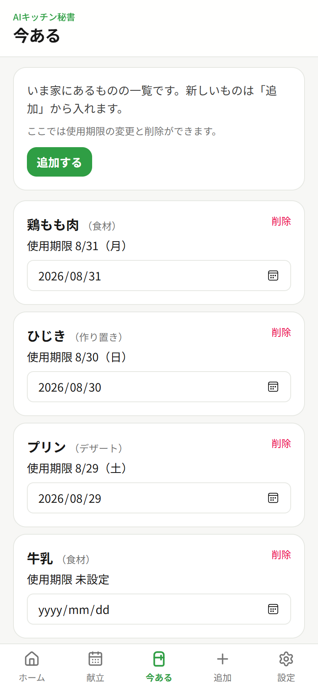
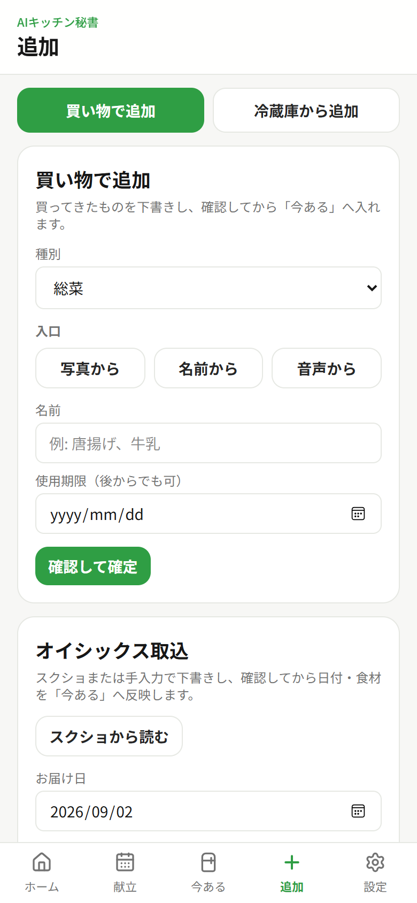
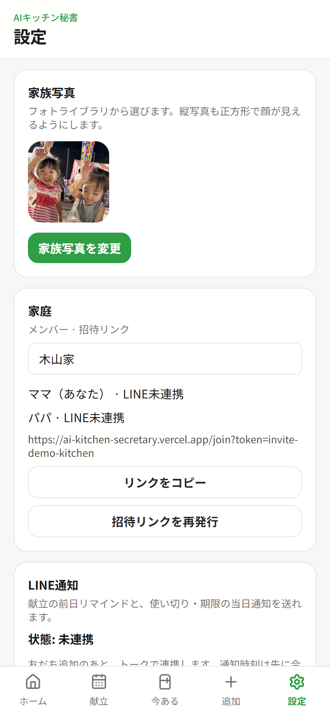

AIキッチン秘書
料理は自分で、管理はAIと一緒に
忙しいのに頑張っているのに、思い通りにできなくて溜まる小さな罪悪感。
その「管理の負担」だけを、責めないAIが支える企画です。
AIは代行者ではなく、伴走パートナー
手作りの喜びはそのまま。忘れる・余る・バタバタする、管理だけを支える
ここから、背景・社会課題・コンセプト・製品の核、そして完成のイメージを順に見ていきます。
企画の背景
課題の中心は「レシピが思いつかない」ことではありません。 頑張っているのに思い通りにできないことから来る、日々の小さな罪悪感の積み重ねです。
作り置きが食べきれない
味噌汁や煮物を頑張って作ったのに、冷蔵庫に残り「また余らせた」と感じる。
届いた食材を忘れて二重買い
宅配で頼んだ食材があるのに存在を忘れ、また買ってしまう。
定番リズムがあるのに前日準備できない
平日はおにぎり、土曜は卵サンド——分かっているのに忙しくて前日に仕込めず、当日バタバタする。
だから欲しいのは「代わりに料理してくれるAI」ではない。 手作りの楽しさはそのままに、管理の負担だけを支えてくれる存在です。
個人のモヤモヤは、社会課題でもある
「また余らせた」「また買いすぎた」は家庭の中の話ですが、日本全体では食品ロス（まだ食べられるのに捨てられる食品）として大きな数字になっています。
Before → After
- •献立・在庫・買い物・予定が別々
- •「また余らせた」が積み重なる
- •定番があるのに先回りできない
- •自分を責めてしまう
- •定番・在庫・リマインドを家庭で共有
- •余りを「明日使える食材」として扱う
- •前日夜・当日朝に先回り通知
- •責めず、手作りを続けられる設計
よくある献立AIとの違い
世の中には「今日何作る？」をAIが提案するアプリが増えています（クラシルのAI献立、冷蔵庫連動のpeccoなど）。この企画の軸はそこではありません。
出典例: AI献立アプリの比較記事
この企画の核（MVP）
MVP（Minimum Viable Product＝価値を確かめられる核となる製品）は、背景の3モヤモヤに直撃する機能に絞っています。
定番リズム
曜日テンプレ＋例外日（平日おにぎり、土曜卵サンドなど）
在庫メモ
名前・種類・数量・使い切り目安・写真（読取＋手入力）
先回りリマインド
前日20:00（定番）／当日7:00（使い切り）をLINEで通知
レシピ検索ボタン
在庫／余りからCookpad・クラシル等を選択して検索
明日はお弁当の日です。ご飯を多めに炊きますか？
冷蔵庫の「煮物」を使い切りたい日です。レシピを探しますか？
広げられること
完成のイメージ
料理は自分で、管理はAIと一緒に。 下タブは ホーム／献立／今ある／追加／設定。
公開アプリを開くhttps://ai-kitchen-secretary.vercel.app
画面の決まり
- ホーム：日付＋家族写真、献立提案（朝夕）をすっきり表示、おすすめ写真、日付の前後切替
- 土日夕の初期表示は「実家（パス）」（空・未設定にしない）
- 「実家（パス）」はどの日の朝・夕でも選択可
- 共通：実家（パス）→その表示のみ／家で作る→提案
- 編集の先：差し替え・外食・調達（買って家で食べる）・定番店・記録編集。本線は家で作る
- レシピ読取：①写真を選ぶ／②サンプル写真で試す
下の5画面は、公開アプリを 8/28（金）で撮ったものです。 オイシックスは、定期で届く食材宅配サービスです。
1. ホーム
日付＋家族写真・朝夕・おすすめ・日付切替

2. 献立
金 8/28・実家（パス）／家で作る

3. 今ある
冷蔵庫まわりの一覧と使用期限

4. 追加
写真／名前／音声・宅配の取込

5. 設定
家族写真・家庭・通知

誰に・どう届けるか
設計は一般公開＋家族共有を前提にしつつ、いまの利用は自分の家庭だけのクローズド利用です。 家庭の情報（定番・在庫・リマインド）はメンバー全員で共有します。
卒業制作として押さえたこと
提出の4つの観点を、この図解のなかでも触れています。
完成した卒業制作の概要
AIキッチン秘書 — 「料理は自分で、管理はAIと一緒に」。 ホーム・献立・今ある・追加・設定の5画面で、朝夕の献立・在庫・追加・レシピ写真読取まで一通り触れるWebアプリ。
公開URL: https://ai-kitchen-secretary.vercel.app （上の「完成のイメージ」に画面イメージあり）
どんな場面の面倒か
余りや作り置きがあるのにまた買う、定番（おにぎり・卵サンドなど）なのに前日準備できない、献立・在庫・買い物が頭とメモに散らばる—— キッチンまわりの小さな摩擦と罪悪感（上記「企画の背景」「3つのモヤモヤ」）。
お題を選んだきっかけ
自分の家庭でも起きる「あるのに買う」「定番なのに準備できない」が、特別な失敗ではなく日常の摩擦だと感じたから。 AIに料理を任せたいのではなく、自分で作る前提で、忘れる・散らかる部分だけ一緒に見てほしかった。 壁打ち（grill-me）で「代行ではなく伴走」「責めない」を軸に企画を固め、卒業制作の武器にした。
作ってみて気づいたこと
工夫したポイント
- ・AIの役割を伴走・提案・リマインドに絞った
- ・ホームは今日の朝夕がすぐ見える短さにした
- ・「家で作る」本線／実家（パス）・外食・調達は編集から
- ・相談と開発を分け、触れる完成度まで段階的に作り込んだ
苦戦したポイント
- ・やりたいことが多く、見せ場を絞る判断が必要だった
- ・「責めない」トーンを画面の言葉量に落とす調整が続いた
- ・土日夕の実家（パス）がデモやデザート表示に潰される不具合の切り分け
- ・レシピ読取はAPI制約があり、サンプル導線で見せ場を残した
ひとことで言うと
忙しい家庭の「小さな罪悪感」を減らし、
手作りの食卓を続けられるようにする。
AIキッチン秘書は、料理を奪わない。管理だけを支える伴走パートナーです。